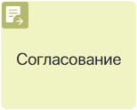Графический элемент Согласование используется, чтобы в ходе бизнес-процесса вручную или автоматически утвердить или отклонить документ, элемент приложения или файл. Если процесс переходит к блоку Согласование, автоматически создаётся лист согласования. По умолчанию финальная резолюция Согласовано или Отказано отображается в нём по завершении процесса. Вы можете сформировать результат согласования после этапа рассмотрения. Для этого используйте графический элемент Закрыть согласование.
Размещение блока на схеме процесса и его настройки отличаются в зависимости от выбранного способа согласования:
- Вручную — в этом случае при переходе процесса к блоку Согласование исполнителю назначается задача рассмотреть документ и создаётся лист согласования со статусом На согласовании. В настройках блока настраивается управление согласованием. Можно задать параллельное или последовательное согласование для группы согласующих, требование подписать документ электронной подписью, ограничить время выполнения задачи. Сотрудник активно участвует в согласовании, выполняя задачу, которую вы настроили в блоке;
- Автоматически — этот вариант предусматривает, что блок Согласование выполняется автоматически. В рамках блока задача согласования не назначается. Такую задачу нужно настроить дополнительно и разместить на схеме процесса до его перехода к блоку Согласование. Исполнителю достаточно принять решение (согласовать или отказать) через стандартный интерфейс задачи. Далее процесс перейдёт к блоку Согласование, в котором автоматически будет вынесена соответствующая резолюция. При этом создаётся лист согласования с резолюцией. Подробнее читайте в статье «Автоматическое согласование».
Настроить согласование вручную
Разместите блок Согласование на отрезке процесса, где сотрудник, указанный в зоне ответственности, должен утвердить или отклонить документ. Пользователю поступит задача рассмотреть документ. Одновременно с этим создаётся лист согласования. В него запишутся резолюции согласующих и их комментарии с дополнительно приложенными файлами.
По умолчанию итоговая резолюция Согласовано или Отказано формируется после окончания процесса. До этого момента пользователи видят статус На согласовании. Чтобы отобразить финальную резолюцию в листе согласования после этапа рассмотрения, используйте блок Закрыть согласование. Ознакомиться с таким процессом можно в статье «Пример настройки маршрута согласования».
начало внимание
Убедитесь, что в контекст процесса добавлена переменная, ссылающаяся на объект согласования.
конец внимание
Дважды нажмите на блок на схеме процесса, чтобы открыть окно с настройками. Они выполняются на вкладках Основное, Время выполнения, Планирование в календаре, Переходы, Пользовательские статусы, Подпись и Замещения. Вы можете указать название задачи, установить срок её выполнения, определить тип и логику согласования, запланировать задачу в календаре исполнителя, включить опцию подписания и т. д.
Вкладка «Основное»
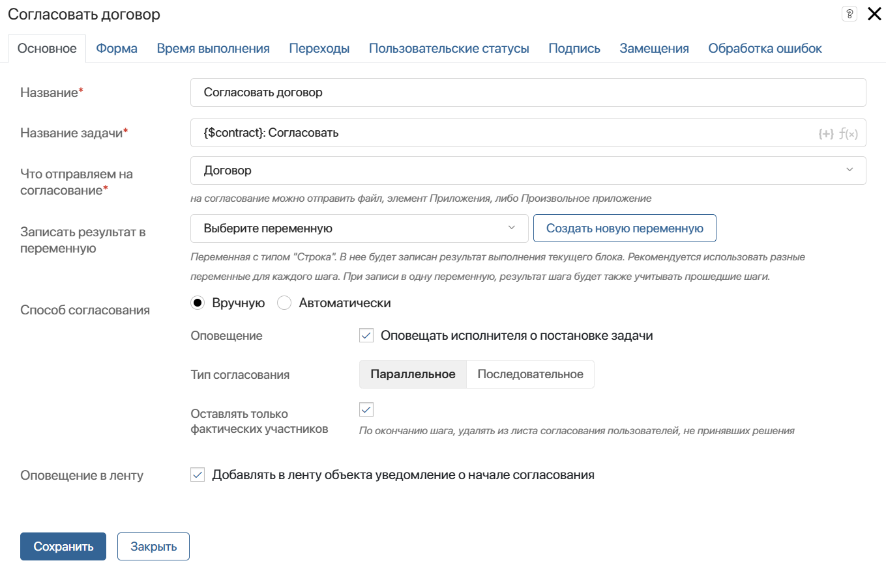
- Название* — введите текст, который будет отображаться на схеме процесса. Рекомендуем давать краткое и ёмкое название, чтобы процесс легко читался;
- Название задачи* — текст, введённый в этом поле, исполнитель увидит в списке задач или в карточке задачи. Вы можете добавить в название контекстные переменные, чтобы создать более детальное описание. Для этого нажмите значок {+} в правом углу поля. Также можно добавить условия и функции для формирования названия элемента по шаблону. Это позволит сгенерировать более информативное название задачи;
- Что отправляем на согласование* — укажите контекстную переменную, ссылающуюся на файл или приложение;
- Записать результат в переменную — укажите переменную типа Строка, в которую будет записан код результата выполнения текущего блока:
approvedилиrejected. Результат зависит от того, какую кнопку нажмёт согласующий в карточке задачи — Согласовать или Отказать. Когда согласующих несколько, и хотя бы один из них откажет в согласовании, в результат запишется значениеrejected. Если согласование будет прервано, запишется значениеterminated. Эту переменную можно вынести на форму приложения, а также использовать в шлюзах и скриптах для реализации более сложной логики согласования; - Способ согласования — в зависимости от выбранного способа набор вкладок в окне настроек и список настроек, указанных ниже на текущей вкладке, отличается. Чтобы настроить автоматическое согласование, выберите вариант Автоматически;
- Оповещение в ленту — включите опцию, чтобы в ленту файла или приложения отправлялось сообщение о начале согласования.
При выборе способа согласования Вручную в окне также отобразятся поля:
- Оповещение — включите опцию, чтобы согласующий сотрудник получил в #ленту уведомление о назначении задачи;
- Тип согласования — настройка появляется, когда в зоне ответственности, в которой расположен блок, в качестве исполнителя выбраны группа пользователей или отдел. Определите, каким образом задача согласования будет назначаться и выполняться, выбрав опцию:
- Параллельное — задача согласования будет поставлена одновременно всем исполнителям, указанным в зоне ответственности. В зависимости от настроек переходов, ход процесса либо остановится и будет ожидать, пока каждый исполнитель рассмотрит документ, либо продолжится и перейдёт к следующему шагу, как только один из сотрудников выполнит назначенную задачу;
- Последовательное — задача согласования будет последовательно назначаться сначала одному сотруднику, указанному в качестве исполнителя в зоне ответственности, а затем другому. Процесс перейдёт к следующему шагу после того, как все сотрудники выполнят задачу. С помощью настроек переходов можно определить ход процесса, если кто‑то из согласующих отклонит документ.
Обратите внимание, для динамической зоны ответственности задачи назначаются в той последовательности, в которой заполнялась переменная, хранящая исполнителей. Для статической зоны ответственности последовательность определяется случайным образом;
- Оставлять только фактических участников — если при параллельном типе согласования достаточно решения одного сотрудника, эта настройка скроет из листа согласования других пользователей, которые не вынесли резолюции по элементу.
Приведём несколько примеров, чтобы нагляднее объяснить, в каких случаях используется тот или иной тип согласования.
|
|
|
Вкладка «Форма»
Эта вкладка появится, если на согласование отправлен элемент приложения. Она позволяет настроить пользовательскую форму задачи согласования. Если вы хотите использовать форму по умолчанию, которая похожа на форму просмотра элемента, изменять настройки на этой вкладке не нужно.
Чтобы создать форму, нажмите <По умолчанию> и затем кнопку + Создать форму. Откроется шаблон формы в дизайнере интерфейсов.
Разместите на форме нужные виджеты и кнопки. Вы можете применить скрипты, задать валидацию формы и т. д. Сохраните выполненные настройки.
Чтобы настроить отображение свойств элемента приложения, отправляемого на согласование, заново перейдите в настройки блока Согласование на вкладку Форма.
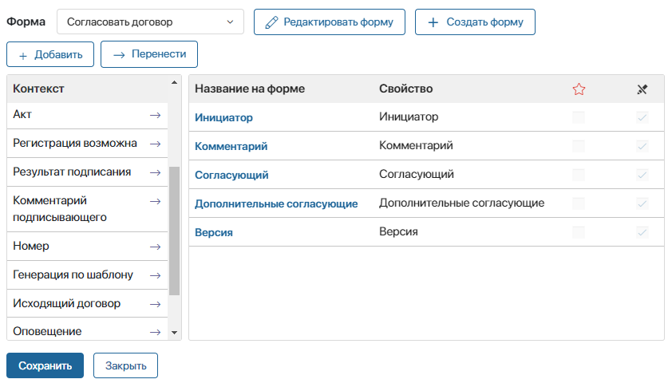
Вынесите нужные поля на форму или создайте новые. Задайте настройки их видимости и обязательность заполнения. Эти действия аналогичны настройкам формы в блоке Задача. Обратите внимание, указанные настройки доступны только для пользовательской формы.
Вкладка «Время выполнения»
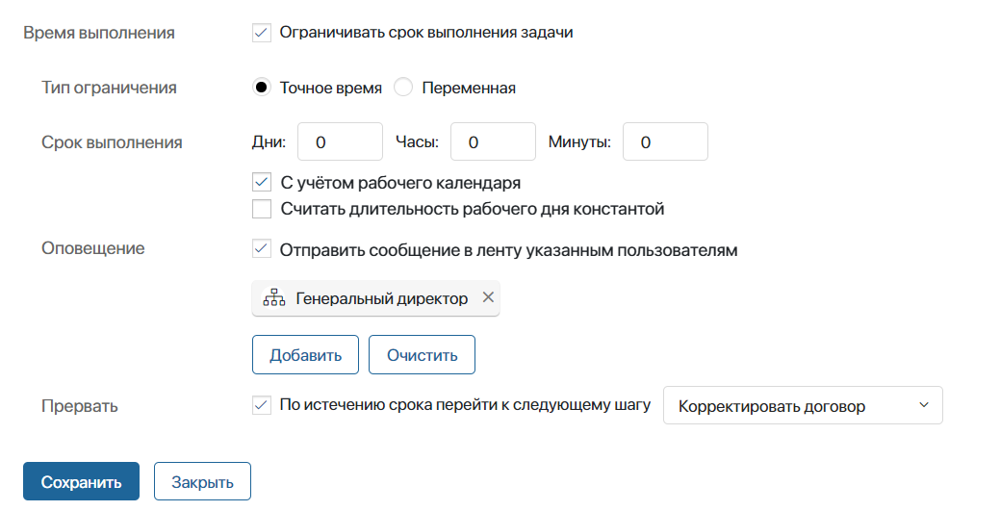
На этой вкладке вы можете настроить сроки выполнения задачи, а также определить, что произойдёт, если в указанное время задача не будет завершена.
Задать срок выполнения задачи можно двумя способами:
- Точное время — укажите, за сколько минут, часов или дней исполнитель должен выполнить работу;
- Переменная — иногда бывает важно закончить согласование до какого-то определённого срока. Например, сотрудник может указать точную дату, когда он должен дать обратную связь клиенту. К этому дню все согласующие уже должны вынести резолюцию по документу. В этом случае время завершения задачи можно определить контекстной переменной типа Дата/время.
Если задача согласования находится в зоне ответственности с несколькими исполнителями, и вы определите срок через контекстную переменную, то все исполнители должны будут завершить согласование к указанному времени, иначе задача будет считаться просроченной.
При уточнении срока выполнения задачи вы можете активировать следующие опции:
- С учётом рабочего календаря — время выполнения рассчитывается согласно рабочему календарю и не включает нерабочие часы сотрудника.
Если кто-то из пользователей отредактировал рабочий календарь, опубликуйте процесс повторно, чтобы применить новый график работы для срока выполнения задачи;
- Считать длительность рабочего дня константой — опция доступна при учёте рабочего календаря. Она позволяет высчитывать срок завершения задачи исходя из количества рабочих часов в день. Для расчёта используется время, указанное в настройках рабочего календаря в поле Стандартный режим работы.
Примеры вычисления срока выполнения даны в статье «Задача».
В поле Оповещение вы можете указать сотрудников, которые получат уведомление, если исполнитель не уложится в срок. В качестве получателя можно добавить текущего пользователя, контекстную переменную (например, инициатора), группу пользователей или элемент оргструктуры.
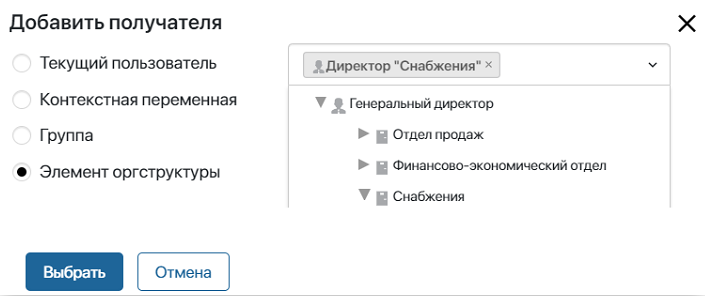
В поле Прервать определите, каким будет следующий шаг в процессе, если исполнитель не успеет завершить согласование до установленного времени.
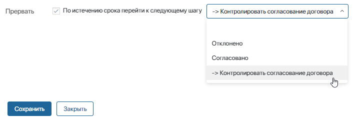
На схеме процесса такой переход отмечается иконкой с часами. Процесс перейдёт по нему, если установленное время истечёт, а исполнитель не подтвердит, что задача выполнена. При этом другие переходы не выполнятся.
Например, если юрист вовремя не выполнил задачу согласования договора, процесс перейдёт к эскалации, и будет поставлена задача генеральному директору.

Вкладка «Планирование в календаре»
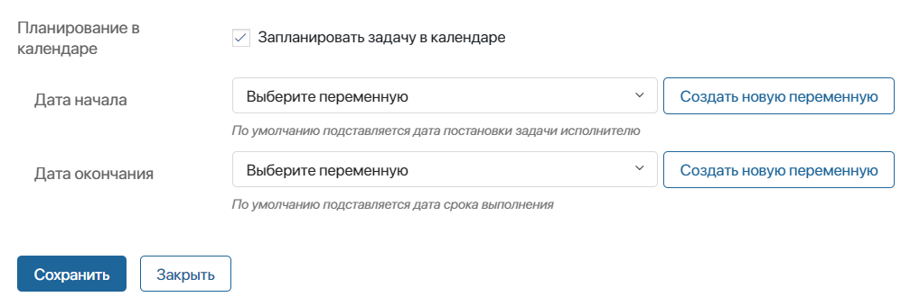
Эта вкладка появится, если срок выполнения задачи ограничен. Здесь вы можете включить отображение задачи в календаре исполнителя.
Чтобы не перегружать календарь, можно запланировать задачу в нём только на определённые дни. Например, срок согласования составляет неделю. Тогда отобразить задачу в календаре можно только на три последних дня этого срока. Для этого:
- Добавьте в контекст переменные типа Дата/время, в которые запишутся значения для сроков задачи в календаре.
- На схеме процесса до блока Согласование разместите скрипт, вычисляющий значения этих переменных.
- На текущей вкладке свяжите поля Дата начала и Дата окончания с этими переменными.
Вкладка «Переходы»
На этой вкладке вы можете задать условия, при которых процесс пойдёт по тому или иному переходу и тем самым определить логику согласования. Кроме того, здесь вы должны указать переход по умолчанию, по которому пойдёт процесс, если ни одно из заданных условий не выполнится.
Если вы добавили переход для обработки ошибок, он отобразится на этой вкладке вместе с остальными. Не задавайте для него условия, так как при выполнении процесса они будут игнорироваться.
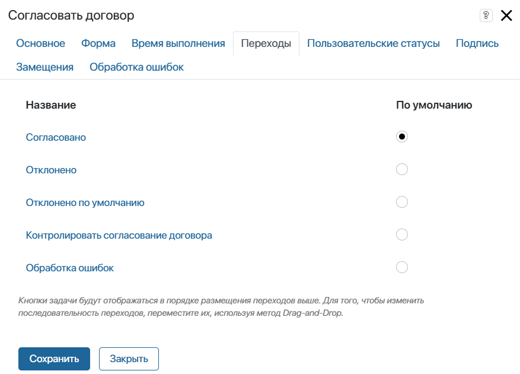
Обратите внимание, если на вкладке Время выполнения настроен переход эскалации, процесс сможет перейти по остальным переходам только до окончания срока задачи.
начало внимание
Независимо от того, сколько переходов настроено на схеме процесса для блока Согласование, в карточке задачи согласования всегда по умолчанию отображаются только две кнопки: Согласовать и Отказать. Вы можете добавить дополнительные кнопки для вынесения пользовательской резолюции при согласовании или отказе на вкладке Пользовательские статусы. Однако дальнейший ход процесса определяется только на основе условий, заданных для переходов.
конец внимание
Чтобы открыть окно с настройками перехода, дважды нажмите на его название.
На вкладке Основное укажите короткое и понятное название перехода. Таким оно отобразится на схеме процесса. Также можно добавить описание перехода.

На вкладке Условия перехода задайте настройки:
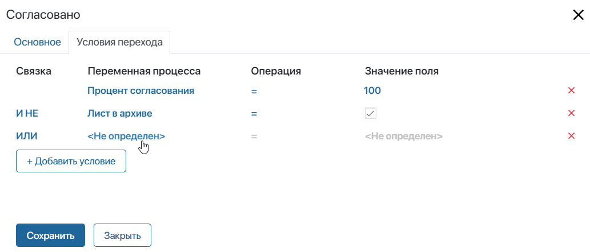
- Переменная процесса — укажите переменную из контекста процесса или одну из опций:
- Процент согласования;
- Процент отказа;
- Лист в архиве — проверка, отправлен ли лист согласования в архив. Обратите внимание, для элементов правила архивации листов задаются в настройках приложения. Для файлов листы всегда отправляются в архив при добавлении новой версии;
- Объект согласования не найден — проверка, что объект не удалён из системы. Обратите внимание, опция работает только при отправке на согласование файла. Если отправляется элемент приложения, при его удалении выполнение процесса в любом случае прервётся с ошибкой;
- Нет доступа к объекту согласования.
- Операция — задайте оператор сравнения для проверки конкретного условия;
- Значение поля — введите значение, при котором условие будет выполняться;
- Связка — это логическая операция, которая используется для проверки нескольких условий. Если результат проверки Истина, то процесс продолжается по данному переходу:
- И — результат Истина, если выполняются оба условия;
- ИЛИ — результат Истина, если выполняется хотя бы одно условие;
- И НЕ — результат Истина, если выполняется первое условие, и в то же время не выполняется второе условие;
- ИЛИ НЕ — результат Истина, если выполняется первое условие либо если не выполняется второе.
Обратите внимание, что условия проверяются в том порядке, в котором они перечислены в настройках перехода.
Для задач согласования, размещённых в зоне ответственности с несколькими исполнителями, условия перехода проверяются каждый раз, когда кто‑то из них завершает задачу.
Подробнее о применении переходов в процессе читайте в статье «Переходы». О настройке условий для переходов в блоке Согласование читайте в статье «Пример настройки маршрута согласования».
Вкладка «Пользовательские статусы»
При создании пользовательского статуса в задаче согласования появится дополнительная кнопка. С её помощью сотрудники смогут выносить пользовательские резолюции в рамках стандартной процедуры согласования или отказа.
В зависимости от того, на какой объект (элемент приложения или файл) ссылается переменная, указанная на вкладке Основное в поле Что отправляем на согласование, кнопка появится в карточке элемента или на странице просмотра файла.
начало внимание
Кнопки в задаче согласования используются только для вынесения резолюции и не определяют дальнейший ход бизнес‑процесса. Ветка, по которой направляется процесс, выбирается автоматически в зависимости от условий, заданных в настройках переходов.
конец внимание
Например, вы можете добавить статус Согласовано с замечаниями. Сотрудники смогут утвердить документ, в который требуется внести минимальные правки. При этом движение документа по процессу продолжится согласно логике, заданной исходящими переходами. В листе согласования, напротив фамилии пользователя, выбравшего данную резолюцию, появится статус: Согласовано с замечаниями.
Финальный статус элемента зависит от того, утверждён он согласующими или нет.
Чтобы настроить статусы, заполните поля:
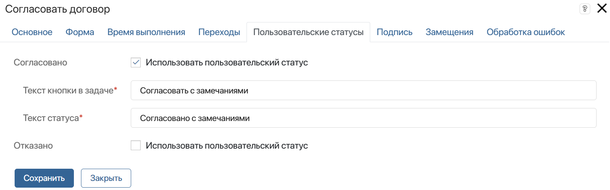
- Согласовано, Отказано — включите опцию Использовать пользовательский статус, если хотите, чтобы у пользователей была возможность вынести дополнительную резолюцию в рамках согласования или отказа;
- Текст кнопки в задаче* — введите название для кнопки, нажав на которую пользователь вынесет решение по элементу приложения или файлу, например, Согласовать с замечаниями. Кнопки для дополнительных резолюций будут отображаться рядом с системными в задаче согласования:
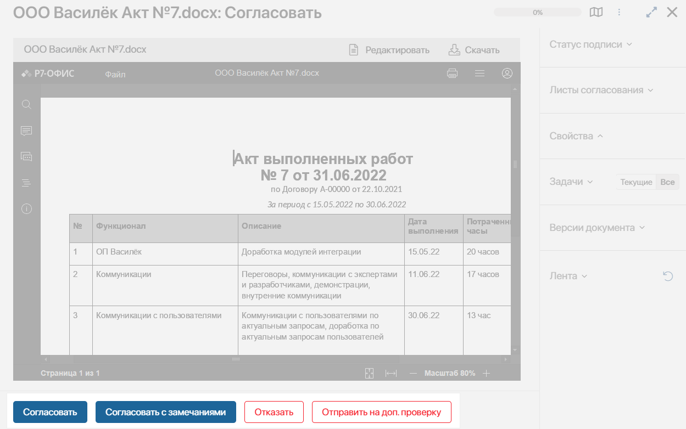
- Текст статуса* — введите название статуса, который можно будет увидеть в листе согласования после вынесения резолюции:
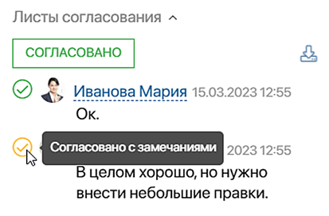
Пользовательские статусы показываются в листе согласования, а также отображаются вместе с системными статусами при выгрузке листа.
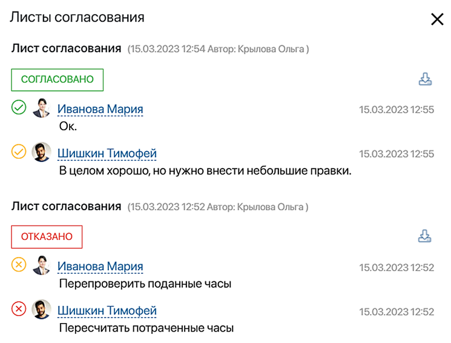
Вкладка «Подпись»
Вы можете настроить использование электронной подписи на шаге согласования. Тогда в поступившей задаче пользователь нажимает кнопку Согласовать, а затем включает опцию подписания. В открывшемся окне сотрудник выбирает объекты для подписания: атрибуты, файл, а также решение. Таким образом он выносит резолюцию и подтверждает её своей электронной подписью. Данные об этом сохраняются в карточке подписанного документа. Подробнее о том, как выполнить такую задачу и где посмотреть детали применённой электронной подписи, читайте в статье «Электронная подпись в приложениях».
Чтобы включить возможность подписывать объект согласования или резолюцию, в настройках вкладки Подпись задайте следующие параметры:
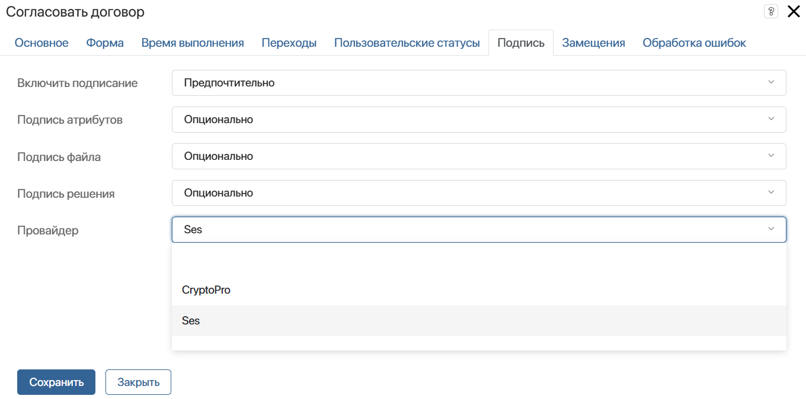
- Включить подписание — для отключения возможности подписания выберите Не использовать. Тогда пользователи будут только выносить резолюцию согласования. Чтобы при выполнении согласования отобразилось окно с опцией Подписать, выберите один из вариантов:
- Опционально — флажок по умолчанию не установлен в опции Подписать. В этом случае вместо кнопки Далее в окне отображается кнопка Согласовать. Нажав её, пользователь согласует документ без подписания. Если установить флажок, пользователь перейдёт к подписанию, нажав Далее;
- Предпочтительно — флажок по умолчанию установлен в опции Подписать, пользователь может его снять;
- Обязательно — флажок установлен в опции Подписать, снять его нельзя. Пользователь не сможет закрыть задачу, если не перейдёт к подписанию атрибутов, файла документа и решения.
- Подпись атрибутов — установите, нужно ли подписывать атрибуты элемента приложения:
- Не использовать — опция Подписать атрибуты не отобразится. Пользователь не сможет подписать атрибуты;
- Опционально — флажок по умолчанию не установлен в опции Подписать атрибуты, пользователь может его установить;
- Предпочтительно — флажок по умолчанию установлен в опции Подписать атрибуты, пользователь может его снять;
- Обязательно — флажок установлен в опции Подписать атрибуты, снять его нельзя. Пользователь не сможет согласовать документ без подписи его атрибутов.
- Подпись файла — настройки в этом поле аналогичны настройкам в поле Подпись атрибутов;
- Подпись решения — настройки подписания резолюции аналогичны настройкам в поле Подпись атрибутов. В этом случае подписывается сформированный системой текст с информацией о задаче согласования, согласуемом элементе, согласующем пользователе и принятом решении с комментарием;
- Провайдер — выберите провайдера, чей сертификат будет использоваться для подписания. Список формируется из модулей криптопровайдеров, которые настроены в разделе Администрирование > Модули > Электронная подпись. Пользователь не сможет изменить выбранное значение на другое. Если оставить поле незаполненным, выбрать провайдера можно в момент подписания.
Вкладка «Замещения»
На этой вкладке вы можете указать переменную, которая управляет переназначением задачи согласования на сотрудника, замещающего основного исполнителя.
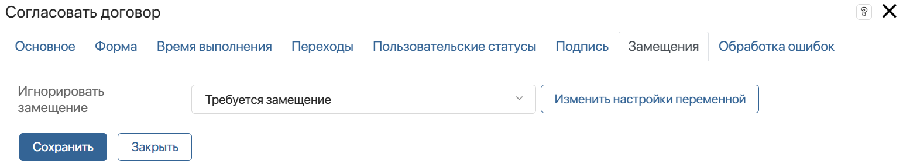
В поле Игнорировать замещение укажите переменную из контекста бизнес-процесса типа Выбор «да/нет».
Если в переменной установлено значение Да, задача согласования придёт изначально указанному исполнителю, а при значении Нет — замещающему его сотруднику. Значение переменной можно изменять в ходе бизнес‑процесса, например, вынести переменную на форму другой задачи, либо с помощью скриптов.
Например, игнорировать замещение можно, если согласуемый документ содержит конфиденциальные данные, которые не должны быть переданы третьим лицам.
Вкладка «Обработка ошибок»
В ходе процесса на этапе согласования может возникнуть ошибка. Например, если переменная, хранящая файл или элемент приложения для согласования, оказывается не заполнена. Вы можете определить, по какой ветке в этом случае направится бизнес‑процесс, и настроить оповещение:
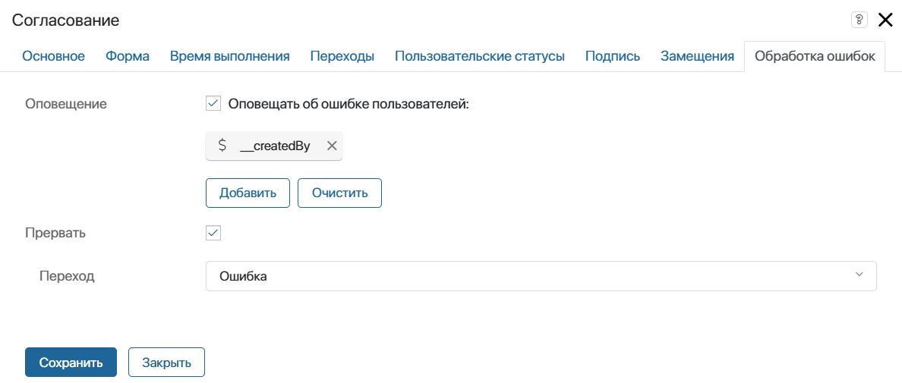
- Оповещение — включите опцию и укажите пользователей, которым будет отправляться оповещение об ошибке в процессе. Вы можете выбрать пользователя, группу пользователей, элемент оргструктуры, а также указать контекстную переменную, например, инициатора процесса;
- Прервать — включите опцию, а затем в поле Переход укажите, по какой ветке направится процесс в случае ошибки. Указанный в этих настройках переход отмечается на схеме процесса значком
 .
.
Обратите внимание, если вы выберете переход, для которого настроены условия, при выполнении процесса они будут игнорироваться. Процесс продолжится по указанному переходу только в случае ошибки.
После завершения настройки нажмите кнопку Сохранить.
Лист согласования
Как только процесс доходит до блока Согласования, в #ленте исполнителей отображается оповещение о поставленной задаче с ссылкой на файл, документ или элемент приложения.
В карточке объекта создаётся лист согласования со списком сотрудников, которым назначены задачи. Рядом с пользователем, который ещё не просмотрел документ, отображается вопросительный знак.
После выполнения задачи в лист добавляется дата, время, принятая резолюция, оставленный комментарий и прикреплённый дополнительный файл, поясняющий решение сотрудника. Нажав на файл в листе, его можно скачать на компьютер.
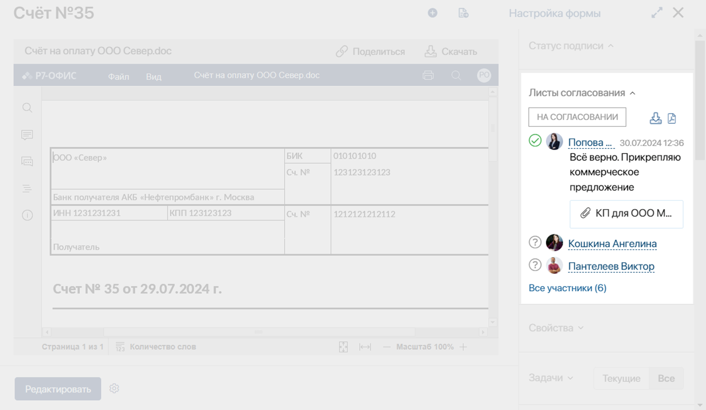
Если документ отправлен множеству исполнителей, можно просмотреть весь список, нажав в листе согласования Все участники. В открывшемся окне пользователей можно отфильтровать по вынесенной резолюции.
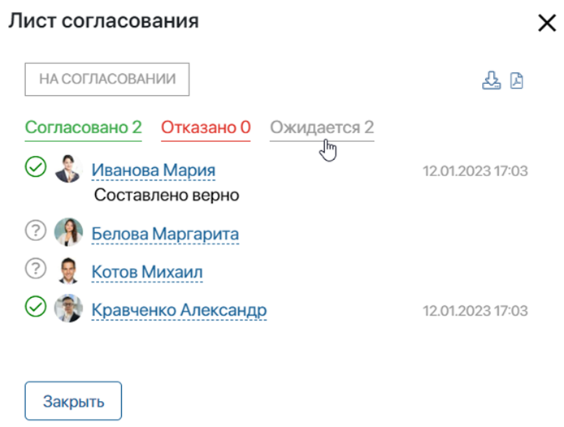
Вы можете экспортировать лист согласования со всеми резолюциями, нажав значок выгрузки на боковой панели докмента:
 — для экспорта файла формата .xlsx;
— для экспорта файла формата .xlsx; — для экспорта файла формата .pdf. Значок отобразится, если используется пользовательский шаблон для формирования листа.
— для экспорта файла формата .pdf. Значок отобразится, если используется пользовательский шаблон для формирования листа.
Подробнее читайте в статье «Листы ознакомления и согласования документов».